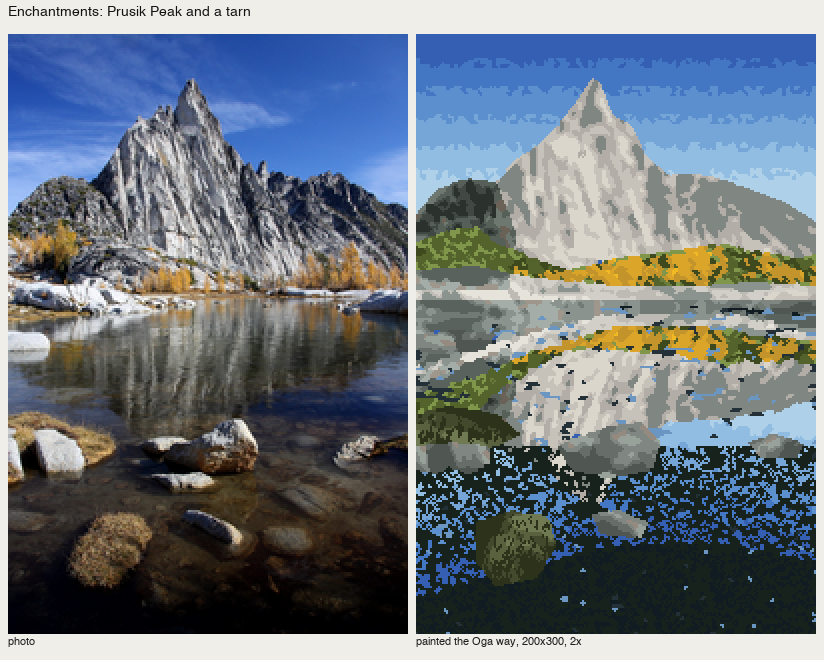
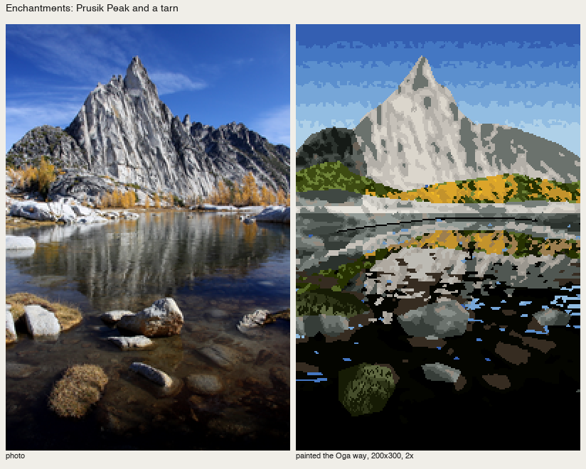
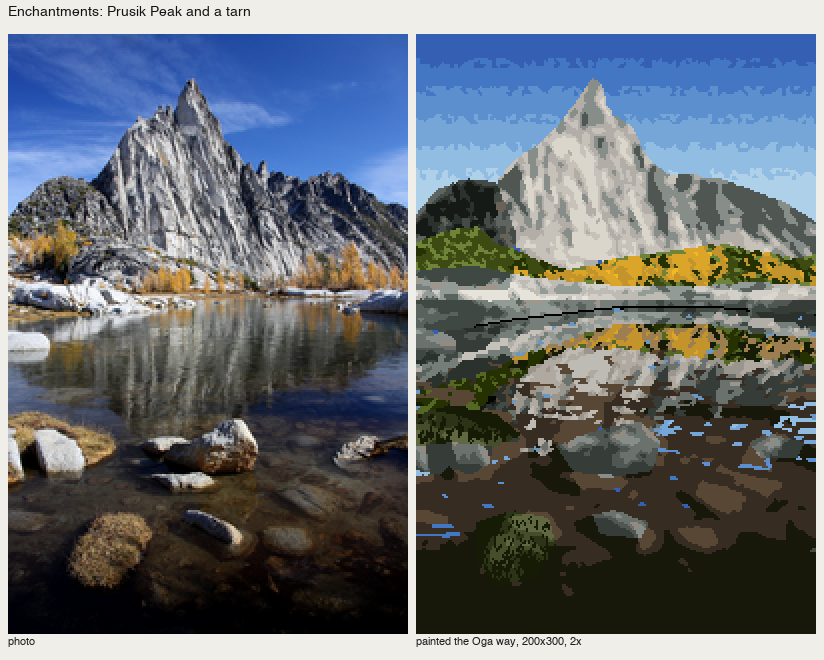
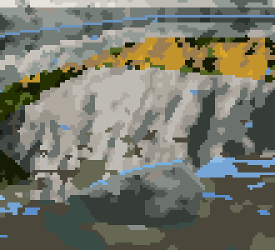
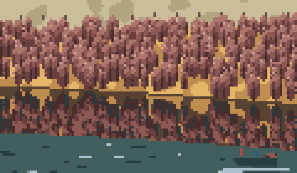

Water: mirror near, bed near your feet
Front page: the tutorial. Code: src/painter.py _water and _down_map, places/enchant.py, places/yakima.py.
The book has no chapter on water, but its plates do the same three things every time. C-0792 shows "only the clear rock bed seen through the water" (p.56). The cover's pools, and C-1354's rock wall and water (p.51), grade a reflection with the hake. From those, and from the master-copy student's finding that Ferrari's reflections copy the painting rather than re-render it, I use three rules:
- The mirror is the painting above, one step down. Copy what is already painted above the waterline, flipped, and map each colour to "one step darker, slightly less chroma".
- Near your feet you see the bed, not the sky. The chance of seeing the mirror falls off with distance below the waterline.
- Sky-coloured dash rows only in the mirror part, and a thin light line where the water meets the shore.
Enchantments: Prusik Peak over a tarn

fig. Photo | painted, 200×300 at 2×.
The palette doesn't know which colour is "one step down", so find it: for each palette entry, take the nearest entry to (L − 0.09, chroma × 0.85):
def _down_map(self, cv, dl=0.09):
"""index -> the palette entry nearest to 'one step down' (L - dl, slightly less chroma)."""
lab = rgb_to_oklab(cv.pal)
tgt = lab * np.array([1, 0.85, 0.85]) - np.array([dl, 0, 0])
d = ((tgt[:, None] - lab[None]) ** 2 * np.array([2, 1, 1])).sum(-1)
return np.argmin(d, 1)
Then walk down each column from the waterline. The mirror wins near the line; the bed wins lower down. The boundary between them is broken by a noise stretched horizontally, so the switch happens in horizontal breaks, as it does on real water:
n = gaussian_filter(rr.standard_normal((H, W)), (0.35, 3.0)); n = (n - n.mean()) / n.std()
bed = np.array([ix['s3'], ix['w'], ix['l0']])[lev] # the bed: organised values of the source, warm family
for x in range(W):
y0 = int(line[x])
for y in range(y0, H):
d = y - y0
p = np.exp(-d / refl_len) # chance the surface shows the mirror
ys = int(round(y0 - 1 - d * kw.get('squash', 1.0)))
if n[y, x] * 0.3 + (p - 0.5) * 4 > 0 and 0 <= ys < H and not m[ys, x]:
cv.a[y, x] = down[src[ys, x]]
else:
cv.a[y, x] = bed[y, x]
dash = m & (n > kw.get('dash_t', 1.5)) & (rr.uniform(size=(H, W)) < 0.7)
cv.a[dash & (np.arange(H)[:, None] < line[None, :] + refl_len * 0.5)] = ix['rim']
(The code comment on the shore line says "dark"; it paints the rim colour, which is a light line. Light is the version I kept.)
The traps, in order:

nb240. v1: a full-height mirror, a sky-blue dash on every ripple, dithered noise water. The near water is a blizzard.

nb241. v2: mirror near, bed far, but the bed was the water's shadow family, near-black. It reads as a hole.

nb242. v3: a warm bed from the rocks' family. Better, but the shadowed near boulders were flat.
The last fix belongs to how-to 4: shadowed boulders take the sky on their tops (the upper two or three rows a light shadow step, the top edge a line of sky colour), so they sit in the water instead of floating.

fig. The tarn at 5×: the larch gold and the peak mirrored one step down, horizontal breaks, the clear bed below.
Yakima: a short mirror under a severing band
On a wide river seen from a bank, the mirror is short: only the willow band and the gold fringe, about 26 px, then the water's own colour. The first generic version mirrored the whole hillside into the river (nb248), which makes a river 30 m wide look like a lake. The hand version maps each colour down explicitly and stops the mirror at the top of the band:
down = {I['go1']: I['go2'], I['go2']: I['bank'], I['wi1']: I['wi2'], I['wi2']: I['wi3'], I['wi3']: I['wi4'], ...}
for x in range(W):
b = int(line_y(BANK, x))
for y in range(b + 1, H):
d = y - b; ys = b - d
if d < 26 and ys > line_y(BAND_TOP, x) - 6:
cv.a[y, x] = down.get(int(src[ys, x]), I['wa2'])
else:
cv.a[y, x] = I['wa2']
Below the mirror, the water has zones of sky sheen on the far left and darker water near and right, sparse dash rows, and the drift boat as the one point that gives the scale (C-0773: a small figure for scale).

fig. The willow band, its short mirror, and the boat, at 5×.